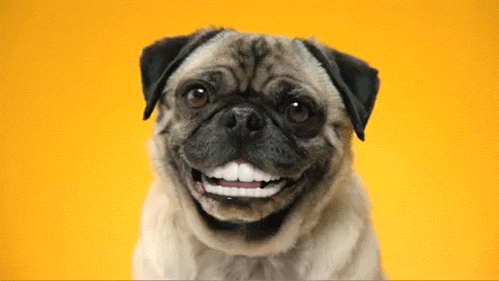

Как ухаживать за собакой: как завести питомца не допустить ошибок
Когда вы впервые приобретаете щенка, необходимо взять на вооружение большое количество информации.
Существует ряд факторов, влияющих на здоровье и благополучие вашей собаки — это в первую очередь ее порода и возраст. В связи с этим важно, чтобы все, что вы делаете, начиная с удовлетворения пищевых потребностей и заканчивая физическими упражнениями и уходом за шерстью, рассматривалось с учетом особенностей вашего питомца.
Содержание
Есть ряд потребностей, характерных для всех собак, которые необходимо учитывать, чтобы животные были здоровыми и могли успешно адаптироваться в семье:
Физическая активность
Любой собаке необходима физическая активность, но уровень и характер нагрузок должны учитывать возраст, размеры и породу животного.
Проследите за тем, чтобы у собаки было место для физической активности: прогулки с собакой не должны рассматриваться просто как возможность быстро вывести животное в туалет.
Помните, что у средних, крупных и очень крупных собак период роста более продолжителен, чем у более мелких. В течение этого периода развиваются их кости и суставы. В связи с этим с такими собаками не следует преодолевать большие расстояния или заниматься определенными видами спорта, пока они не достигнут более взрослого возраста. Для таких собак лучше выбрать более частые, но менее интенсивные сеансы физических нагрузок.
Выделите время для игры: для собаки игра — это разновидность естественной физической активности, которая помогает в психологическом развитии животного.
Лучшая тактика для прогулок с питомцами - понемногу и часто
Условия содержания
Щенки очень восприимчивы к происходящему вокруг, и отрицательный опыт будет иметь длительный эффект. Поведенческое развитие щенка проходит несколько этапов, включая период социализации, который начинается в возрасте четырех недель и продолжается, пока щенку не исполнится 14 недель.
Период борьбы со страхом и период социализации протекают одновременно, поэтому любой психологический стресс, произошедший в это время, может иметь длительные отрицательные последствия. В связи с этим важно пристально следить за реакциями щенка на воздействие факторов окружающей среды с самого первого дня его появления в вашем доме.
Обустройте для щенка отдельное место для сна. Обязательно предоставьте щенку отдельное место для сна, где он сможет уединиться и будет чувствовать себя в безопасности.

Создайте окружающую обстановку, насыщенную стимулирующими факторами. Например, щенкам нравятся большие картонные коробки, в которых можно спрятаться, и резиновые игрушки, которые можно разгрызать. Важно следить за тем, чтобы игры щенка всегда проходили под наблюдением.
Кормление
Как и в случае с физической нагрузкой, пищевые потребности щенка меняются по мере его роста. Вначале щенков необходимо кормить несколько раз в день небольшими порциями, постепенно сокращая количество кормлений до одного или двух раз в день. Размеры и порода собаки также влияют на ее пищевые потребности, так как одни собаки в большей степени предрасположены к нарушениям пищеварения, чем другие. У собаки всегда должен быть доступ к воде. Важно также не перекармливать вашего питомца.
Проследите за тем, чтобы лакомства были исключением из правила, а не правилом. Лакомства необходимо давать в редких случаях — это поможет собаке сохранить нормальный вес. Сахар и шоколад запрещены, поскольку шоколад может быть ядовитым для собак. В качестве вознаграждения во время дрессировки животного можно использовать низкокалорийные крокеты.
Уход за шерстью и здоровье
Регулярный уход за шерстью должен войти в привычку. Это поможет поддерживать здоровье кожи и шерсти щенка, а также позволит сблизиться с вашим питомцем. Кроме того, уход за шерстью повышает вероятность обнаружения различных отклонений и патологий (например, заражение внешними паразитами, кожные заболевания или зоны, вызывающие дискомфорт) на ранней стадии. Большинству собак нравятся процедуры по уходу за шерстью, если они к ним привыкли в раннем возрасте. Однако начинать никогда не поздно!
Начните ухаживать за зубами собаки в молодом возрасте. Это позволит щенку привыкнуть к чистке зубов с использованием зубной щетки и зубной пасты, специально предназначенной для собак. Попробуйте чистить зубы щенка несколько раз в неделю.
Дрессировка
Развивать хорошее поведение и послушание нужно с раннего возраста. Дрессировку щенка следует начинать как можно раньше — в возрасте, когда щенок легче всего обучается.
Для вашего удобства и спокойствия окружающих ваша собака должна усвоить основные правила поведения в обществе. Без колебаний обращайтесь за помощью к специалистам по поводу дрессировки вашей собаки. Существует множество клубов собаководства и школ для щенков, в которых вам окажут необходимую помощь.

Приучение к туалету. Когда в вашем доме появится щенок, он, скорее всего, еще не будет приучен к туалету. Дрессировка требует времени и терпения. Никогда не наказывайте и не ругайте щенка, с которым произошел конфуз. Вместо этого находите способы не допустить возникновения ситуаций, когда щенок ходит в туалет в доме.
Итог
Когда у вас появляется щенок, необходимо принимать во внимание большое количество информации о содержании, воспитании и уходе за ним, включая все изначальные нюансы, необходимые для обеспечения физического и эмоционального здоровья вашего питомца. Однако если с самого начала все делать правильно, вам и вашей собаке будет намного легче в дальнейшем.